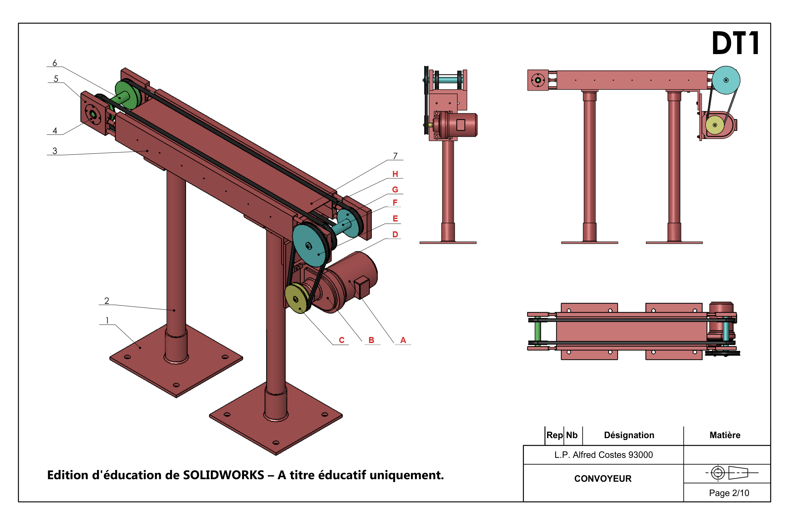

|
Lycée Professionnel Académie de Versailles BAC PRO MELEC |
Fiche Synthèse Ressource : Analyse Fonctionnelle Externe Présentation Industrielle, Données Techniques & Chaîne Cinématique |
M. DIAKHO Construction Mécanique |
Le convoyeur industriel bi-courroies plates est un équipement automatisé de manutention continue. Il assure le transit horizontal automatisé de colis et cartons entre différents postes de travail d'un atelier logistique ou d'une ligne de conditionnement.
Motoréducteur Leroy-Somer : moteur asynchrone triphasé accouplé à un réducteur irréversible à roue et vis sans fin pour réduire la vitesse et démultiplier le couple moteur.
Raccordement sur le réseau électrique triphasé 400 V / 50 Hz. Pilotage de la vitesse par un variateur de vitesse électronique modulant la fréquence d'alimentation.
Transmission intermédiaire par poulie motrice et courroie crantée entraînant les arbres et rouleaux des deux courroies plates transporteuses.
Pupitre opérateur équipé d'un bouton-poussoir Marche, d'un Arrêt d'urgence coup de poing, d'un commutateur de mode et d'un voyant vert de signalisation.

• Charges transportées : colis et bacs industriels jusqu'à 30 kg en transit continu.
• Vitesse d'avance des courroies : réglable de 0,1 m/s à 0,6 m/s.
• Dispositif de tension : vis de réglage de tension agissant sur les paliers mobiles.
• Environnement avec présence continue de poussières de découpe de carton.
• Conditions de propreté et maintenance : lavage périodique des carters extérieurs à l'éponge et au jet d'eau basse pression.
|
Lycée Professionnel Académie de Versailles BAC PRO MELEC |
Fiche Synthèse Ressource : Analyse Fonctionnelle Externe Modélisation SADT [A-0] & Principes de l'Approche « Boîte Noire » |
M. DIAKHO Construction Mécanique |
L'actigramme SADT [A-0] modélise la fonction globale du système en approche « boîte noire ». Il représente le service rendu en associant la matière d'œuvre entrante (Ei), la fonction globale exercée, la matière d'œuvre sortante (Ef) et les contraintes qui pilotent l'opération sans entrer dans le détail mécanique interne :
• État Initial (Ei) : caractérise la position ou la situation du produit avant sa prise en charge par le système.
• État Final (Ef) : caractérise la position ou la situation du produit après son déplacement.
Règle d'or : décrivez l'état de la matière d'œuvre traitée, et non l'état des organes moteurs !
• C'est la modification utile d'état apportée à la matière d'œuvre entre son entrée et sa sortie.
• Dans les systèmes de convoyage et de manutention, la valeur ajoutée est purement spatiale (changement de lieu sans modification de la structure du produit).
|
Lycée Professionnel Académie de Versailles BAC PRO MELEC |
Fiche Synthèse Ressource : Analyse Fonctionnelle Externe Données de Contrôle (W, C, R, E) & Classification des Flux (M.E.I.) |
M. DIAKHO Construction Mécanique |
Les données de contrôle arrivent par le bord supérieur de la boîte [A-0]. Elles influencent, déclenchent ou brident le fonctionnement sans être transformées :
Work (Puissance) : la source d'énergie mécanique, électrique ou pneumatique indispensable pour actionner le moteur.
Configuration de cycle : le choix du mode de fonctionnement (ex. cycle automatique continu, marche manuelle, cycle pas à pas).
Réglages techniques : les paramètres ajustés par les techniciens (vitesse de consigne, tension mécanique des bandes, temporisations).
Consignes opérateur : ordres de mise en marche donnés par l'utilisateur et dispositifs d'arrêt d'urgence pour la sécurité des personnes.
Dans tout système automatisé industriel, les échanges entre les constituants et avec l'environnement extérieur se composent de trois grandes familles de flux. Savoir identifier et distinguer ces flux est une compétence fondamentale pour l'électrotechnicien :
| Famille de Flux | Définition Physique & Rôle dans le Système | Question Clé pour Décider |
|---|---|---|
| Matière (M) | Tout élément matériel, solide ou fluide, qui traverse le système pour être transformé, déplacé ou trié. | « Est-ce l'objet physique ou la marchandise qui subit l'action utile ? » |
| Énergie (W / E) | Grandeur physique de puissance (courant électrique fort, fluide sous pression) qui alimente les actionneurs. | « Cet élément fournit-il la force motrice pour actionner la mécanique ? » |
| Information (I) | Signaux de commande, ordres opérateur, réglages de consigne, détection de capteurs ou voyants lumineux. | « Cet élément sert-il à donner un ordre, régler, surveiller ou signaler un état ? » |
|
Lycée Professionnel Académie de Versailles BAC PRO MELEC |
Fiche Synthèse Ressource : Analyse Fonctionnelle Externe Indice de Protection IP (NF EN 60529) & Guide de Rédaction Technique Professionnelle |
M. DIAKHO Construction Mécanique |
Le code IP qualifie le niveau d'étanchéité d'une enveloppe de matériel électrique face à deux types d'agressions de son environnement d'atelier :
| Chiffre | 1er Chiffre X : Protection Solides & Poussières | 2ème Chiffre Y : Protection Liquides (Eau) |
|---|---|---|
| 0 | Pas de protection spéciale. | Pas de protection spéciale. |
| 1 | Protégé contre corps solides > 50 mm (contact involontaire). | Protégé contre chutes verticales de gouttes d'eau (condensation). |
| 2 | Protégé contre corps solides > 12,5 mm (doigt de la main). | Protégé contre chutes de gouttes d'eau jusqu'à 15° de la verticale. |
| 3 | Protégé contre corps solides > 2,5 mm (outils, fils épais). | Protégé contre l'eau en pluie jusqu'à 60° de la verticale. |
| 4 | Protégé contre corps solides > 1 mm (outils fins, petits fils). | Protégé contre les projections d'eau de toutes directions. |
| 5 | Protégé contre les poussières (dépôts résiduels non nuisibles). | Protégé contre les jets d'eau à la lance de toutes directions. |
| 6 | Totalement étanche à toute pénétration de poussières. | Protégé contre les paquets de mer ou puissants jets d'eau. |
| 7 | — (non applicable) | Protégé contre les effets de l'immersion temporaire (1 m). |
| 8 | — (non applicable) | Protégé contre les effets d'une immersion prolongée sous pression. |
En milieu professionnel, l'électrotechnicien doit formuler des synthèses techniques claires et rigoureuses. Une simple liste de mots isolés ne constitue pas une phrase : vous devez construire une phrase complète articulée autour des 4 piliers indispensables :
Identifier précisément l'organe moteur qui produit le mouvement dans le système.
Indiquer la forme d'énergie d'alimentation consommée pour créer ce mouvement.
Employer le verbe d'action technique caractérisant le déplacement de la charge.
Nommer expressément le produit extérieur transporté et sa destination finale.